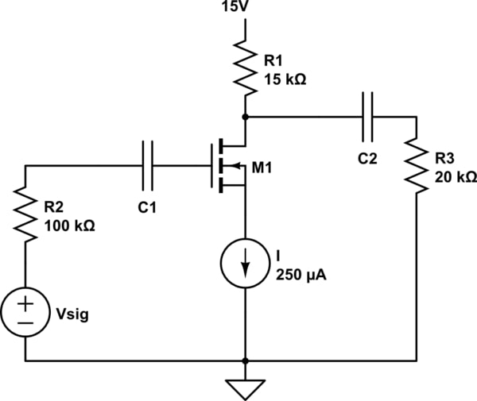

Amplificatore Common Source
Questo è un amplificatore a sorgente comune costruito a partire da un MOSFET. È uno dei circuiti base utilizzati per amplificare segnali analogici, e fornisce guadagno in tensione con una configurazione semplice ed efficace.